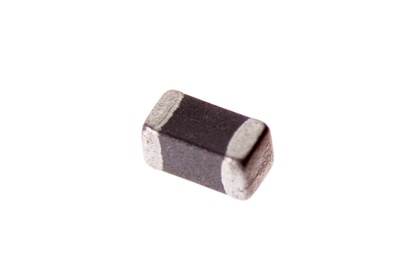

SMD (0603) 2.5k Ohm Ferrite Bead - F6252

Summary
Name: SMD (0603) 2.5k Ohm Ferrite Bead
ID: FERB-0603-X-O252-01
Hex ID: F6252
WebPage: https://github.com/oomlout/oomlout-OOMP/wiki/FERB-0603-X-O252-01
Short URL: http://oom.lt/F6252
Revision History: https://github.com/oomlout/oomlout-OOMP/blob/master/parts/FERB-0603-X-O252-01/
| Type |
Size |
Color |
Description |
Index |
FERB
Ferrite Bead |
0603
SMD (0603) |
X
|
O252
2.5k Ohm |
01
|
Images
About
This part is awaiting a description.
Specifications
| Info |
Value |
| Type |
Ferrite Bead |
| Size |
SMD (0603) |
| Description |
2.5k Ohm |
| Width |
0.8 mm |
| Length |
1.6 mm |
| Number of Pins |
2 |
Extra Details
Spotted a mistake, want to add more? Let us know oomp@oomlout.com
All images and resources are licensed [CC BY-SA] unless otherwise stated (ie. the datasheets)